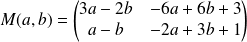
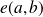
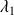
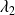
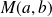

Sujet PSI 2015-26 : Variables aléatoires et matrices / corrigé complet
Le sujet est téléchargeable ci-dessous.
Le corrigé des questions mathématiques est de Cédric Faure, et les indices aussi ! Merci à lui.
Question
1. Pour
 , on introduit la matrice suivante
, on introduit la matrice suivante

On note  le réel où  et  sont les valeurs propres complexes de  .
Écrire une fonction ecart qui étant donnés deux entiers
et
renvoie une valeur approchée décimale à
 près de
.
près de
.
Utiliser le module numpy.linalg pour le calcul des valeurs propres. Voir la synthèse sur le calcul matriciel.
import numpy as np
import numpy.linalg as alg
def Mat(a, b):
return( np.array([[3 * a - 2 * b, -6 * a + 6 * b + 3], [a - b, -2 * a + 3 *b + 1]]) )
def e(a, b):
lambd = alg.eigvals(Mat(a, b))
return( round(abs( lambd[0] - lambd[1] ), 2) )
Question
Q2
Utiliser le module numpy.random pour la génération de tirages suivant des lois de probabilités connues, binomiale, géométrique ou de Poisson (et non simplement le module random). Voir la synthèse sur le calcul matriciel.
import numpy.random as rd
def Mat(a, b):
return( np.array([[3 * a - 2 * b, -6 * a + 6 * b + 3], [a - b, -2 * a + 3 *b + 1]]) )
def e(a, b):
lambd = alg.eigvals(Mat(a, b))
return( round(abs( lambd[0] - lambd[1] ), 2) )
def hasard(p, N = 500):
A = rd.geometric(p, N)
B = rd.geometric(p, N)
res = 0
for k in range(N):
if e(A[k], B[k]) >= 1e-1:
res += 1
# res = sum([1 for k in range(N) if e(A[k], B[k]) >= 1e-1])return(res)
def fonc(p):
return( (2 - 2 * p + pow(p, 2)) / (2 - p) )
def Visu_hasard(P, N = 500):
H, F = [], []
for p in P:
H.append( hasard(p) / N )
F.append( fonc(p) )
plt.figure('Etude comparative de deux lois geometriques')
plt.plot(P, H, color = 'red')
plt.plot(P, fonc(P), color = 'black')
plt.show()
>>> Visu_hasard(np.linspace(.01, .99, 99))